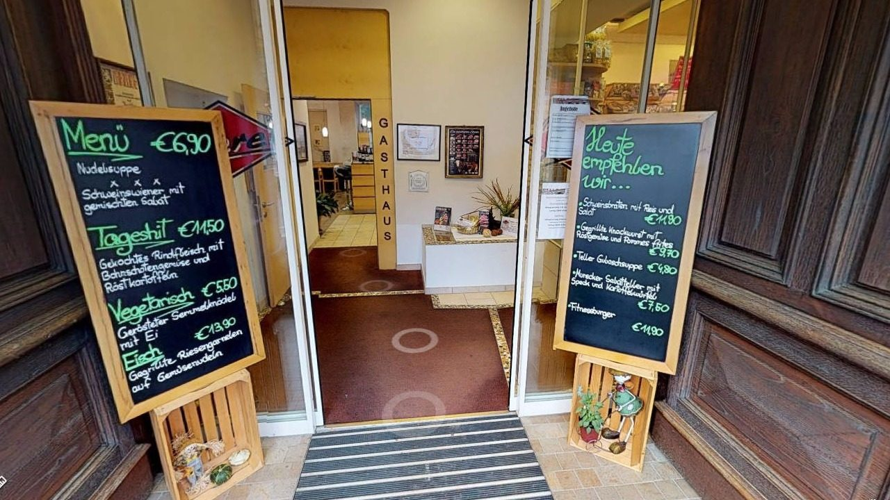

Planbar
Kein Abenddienst im Gasthaus
Das Gasthaus ist Montag bis Freitag von 8.00 bis 15.00 Uhr geöffnet, am Wochenende und an Feiertagen geschlossen.
01 Karriere
Zurzeit arbeiten 16 Mitarbeiterinnen und Mitarbeiter in der Fleischerei und im Gasthaus. Geführt wird der Betrieb seit 1995 von Jörg Oberer, unterstützt von seiner Frau Maria Oberer.

Das Haus ist rund 400 Jahre alt und seit beinahe 120 Jahren in Familienbesitz – in der vierten Generation.
02 Warum hier
Planbar
Das Gasthaus ist Montag bis Freitag von 8.00 bis 15.00 Uhr geöffnet, am Wochenende und an Feiertagen geschlossen.
Handwerk
Wurst, Schinken, Reifung und Zuschnitt entstehen vor Ort – nicht im Zentrallager.
Herkunft
Fleisch ausnahmslos aus der Steiermark, AMA-Gastrosiegel-Betrieb, „Aus der Region für die Region“.
03 Neu: Bewerbung online
Wir freuen uns über Bewerbungen für Küche, Service, Fleischerei und Verkauf – auch initiativ. Schreiben Sie uns kurz, was Sie können und wann Sie starten könnten.